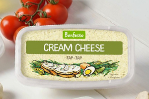
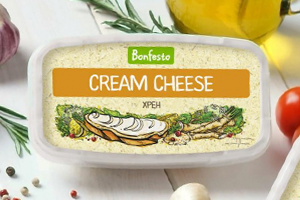
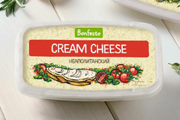

Представлен в брендах

тар-тар
Сыр мягкий
кремчизтар-тар
Прекрасно заменяет классический
французский соус из желтка,
растительного масла и зеленого лука.

хрен
Сыр мягкий
кремчизхрен
Хорош для бутербродов с рыбой или
мясом. Можно добавлять в салаты для
пикантного вкуса.

неаполитанский
Сыр мягкий
кремчизнеаполитанский
Идеален для курицы, отлично сочетается
с говядиной в блюдах средиземноморской
кухни.
Сыр мягкий
кремчизнеаполитанский
Идеален для курицы, отлично сочетается
с говядиной в блюдах средиземноморской
кухни.
Сыр мягкий
кремчизтар-тар
Прекрасно заменяет классический
французский соус из желтка,
растительного масла и зеленого лука.